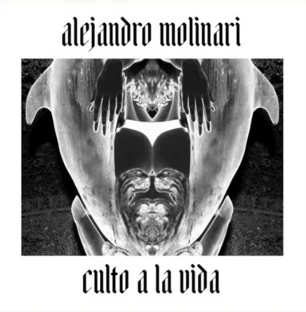
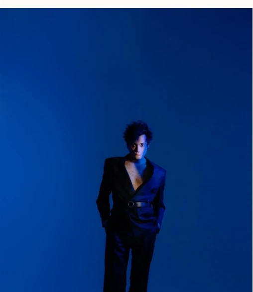
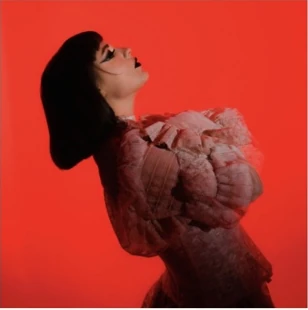
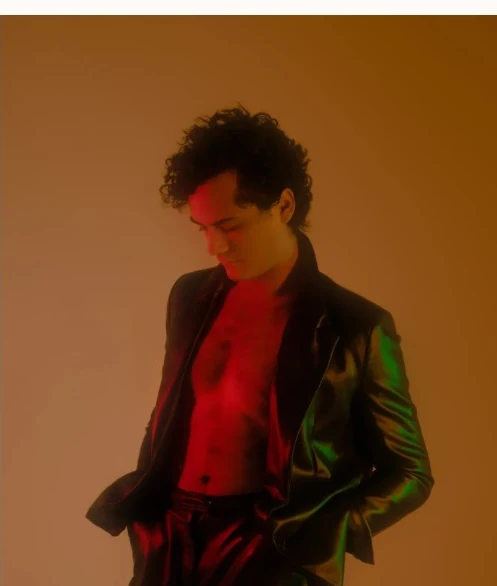

GUCCI ORIGINAL MUSIC & SOUND DESIGN
Palace Gucci by Purple
Original music & sound design
Independent artist · Berlin
Music, performance
and moving image.
Original music & sound design
Body Fall 2021 · Music with Juno Francis
Even Cowgirls Have the Blues
Commissioned contribution
With Nina FOK · Parallel Vision

Parallel Vision reissue · Purple Diary feature (2023)

ARTIST PORTRAIT / ARCHIVEWith Juno Francis · Italians Do It Better

RELEASE ARCHIVE / PREVIEW IMAGESingles, collaborations and EPs

PORTRAIT / ORIGINAL ARCHIVEPortraits and selected images
Selected editorial films have their own project pages with source material and credits. Further commissions are being documented.
Selected music, past and present.
Alejandro Molinari is a Venezuelan-born musician, producer and performer based in Berlin.
His music draws from post-punk, Italo disco and new wave, moving between analogue synthesis, hypnotic rhythm and multilingual vocals.
Alongside recordings and live performances, his work crosses into film and fashion editorials. He founded Parallel Vision ↗, an independent label connecting music and visual storytelling.
For music, collaborations
and selected commissions.